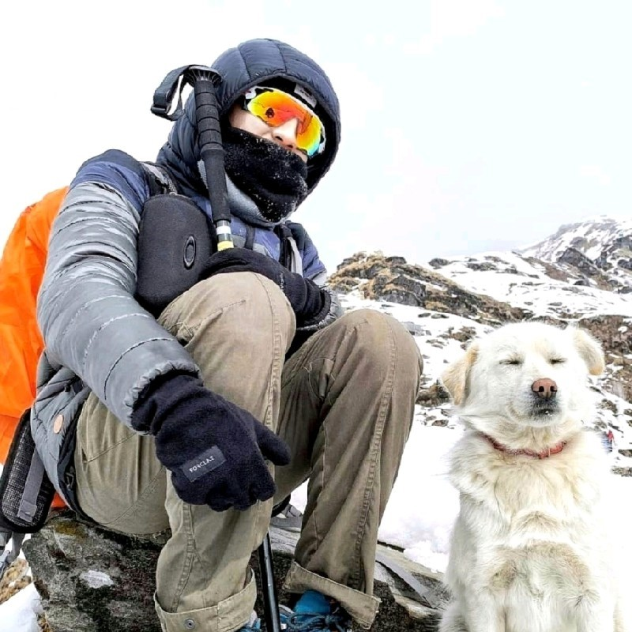

Final year undergraduate student majoring in instrumentation and control engineering technology applied science degree at Universitas Gadjah Mada (UGM) with an open developing mindset and 6+ years of experience in leadership and management organizations. Always continuing to develop self-competence both in hard skills and soft skills.
Enthusiast in computer and electrical fields. Primary in manufacturing, automation, robotics, and renewable energy. Currently active as an intern in one of the largest automotive companies in Indonesia at Toyota Motor Manufacturing Indonesia, and also as a member in Society of Petroleum Engineers International.
2019 - Present | Instrumentation and Control Engineering Technology
2015 - 2018 | Mathematics & Science
Aug 2022 - Present | Engine Production Karawang Division - Maintenance Engineering Development
Jan 2022 - Aug 2022| Instrumentation and Control Engineer - Maintenance Personnel Development
Dec 2020 - Dec 2021 | Engine R&D Division
Mar 2021 - Oct 2021 | Talent Development
As an international buddy of the AIESEC International Global Volunteer program
Programming an app that can recommend the best restaurants in someplace (in this case at Bali) using the KMeans clustering methods with up to 100x iteration that affects data output accuracy. The data itself was acquired using web scraping methods. This data contains how many reviews, ratings, and users have been given to a restaurant.
Simulate actual Pneumatic & Hydraulics Steel Strip Feeder in Steel Manufacturing Industry
Leadership Organization
Programming (C++, Python, HTMl, CSS)
Public Speaking, Presentation, & Networking
Leadership Organization
Microcontollers
Indonesia (Native)
English
"Rafifnanda is a bright person who really friendly, wise, and talented that really have the spirit to pursue for his better career. He is warm-hearted person and like to share his experiences to each other. I believe Rafifnanda have the will and potential to become a great engineer in the future! To Rafifnanda colleagues I really recommended him to work with him in the future."
"Rafifnanda was being my partner in the last/past few semesters. He's being one of the most out of the box and prolific critical thinker i've ever known."